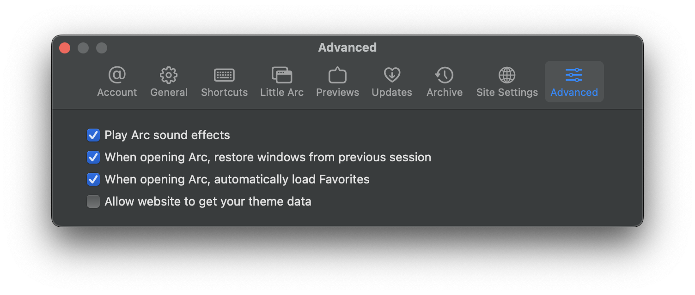
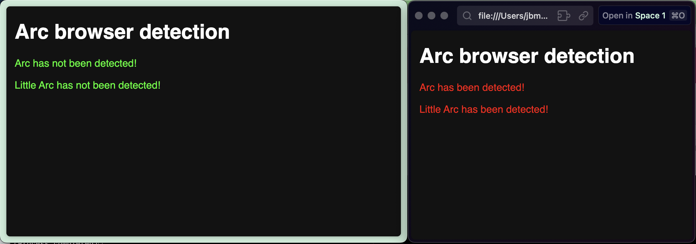

Arc has a setting under Advanced > Allow website to get your theme data. This setting is on by default. This is used to detect Arc.
The Little Arc detection is similar, except it actually gets the values of the theme data and compares it with what is expected from Little Arc.
Most likely not - but if you're paranoid about it, or know who you are, it doesn't hurt to disable the setting.
To avoid being detected in a regular Arc window, go to Advanced in Arc's settings menu, then disable Allow website to get your theme data:

However, as of Arc 0.87.0 (36910), your setting is not respected in Little Arc windows, and in this case Arc (as well as Little Arc itself) can always be detected:

This is likely a bug - I've reported it to The Browser Company.